\(\definecolor{red}{RGB}{255,0,0} \definecolor{orange}{RGB}{245, 165, 0} \definecolor{yellow}{RGB}{255,215,0} \definecolor{green}{RGB}{0,255,0} \definecolor{indigo}{RGB}{0,0,255} \definecolor{violet}{RGB}{138,43,226} \definecolor{black}{RGB}{0,0,0} \require{cancel} \newcommand{\t}{\theta} \newcommand{\w}{\omega} \newcommand{\blksq}{\blacksquare} \newcommand{\box}{\boxed} \newcommand{\Frac}{\displaystyle \frac} \newcommand{\chec}{\checkmark} \)
Notes: These solutions are provided "as-is," for informational purposes only, with no warranty of any kind, expressed or implied, including that of correctness, adequacy, and/or suitability for any purpose, whatsoever. Corrections are welcome and should be emailed to selectedsolutionsdotnet@gmail.com.
Purple font indicates clicking on the text will return you to your prior place; a \(\blksq\) marks the end of a proof.
| Section 5: The Unit Circle; Trig Function Properties | |||||||||
|---|---|---|---|---|---|---|---|---|---|
| 5.10 | 5.14 | 5.16 | 5.20 | 5.24 | 5.28 | 5.32 | 5.36 | 5.42 | 5.46 |
| 5.50 | 5.54 | 5.56 | 5.60 | 5.64 | 5.76 | 5.86 | 5.92 | 5.98 | |
| Section 6: Graphs of Sine and Cosine Functions | |||||||||
| 6.12 | 6.16 | 6.20 | 6.24 | 6.30 | 6.42 | 6.50 | 6.58 | 6.62 | 6.66 |
| 6.72 | 6.76 | 6.80 | 6.84 | 6.86 | 6.90 | 6.92 | 6.99 | ||
| Section 7: Graphs of tan, cot, sec, and csc | |||||||||
| 7.8 | 7.14 | 7.22 | 7.28 | 7.34 | 7.40 | 7.44 | 7.48 | 7.50 | 7.51 |
| Section 8: Phase Shift; Sinusoidal Curve Fitting | |||||||||
| 8.6 | 8.10 | 8.14 | 8.18 | 8.22 | 8.26 | 8.34 | 8.38 | ||
In tutoring trigonometry (all math really, but especially trigonometry) I am often asked something like "How do you remember all these formulas/identities?" I always answer: "I don’t, I remember where to look them up" (which, in 2026, is ridiculously easy to do on the internet: just type "trig identities" into any browser and the default search engine will, in a matter of microseconds—indeed, before you even finish typing it in!—return umpteen lists of trig identities). However, remembering them, especially when you’re just learning them, isn’t really the issue; the issue is proper use of them: the whole point of the trig identities, etc., is to reduce complicated‑looking problems to simpler problems, in a—quite literally—formulaic way. The issue is how to use the formulas to "plug-and-chug," and a big stumbling block toward that goal is recognizing which formulas/identities are applicable in a particular situation. This is exacerbated by the plethora of new formulas being thrown at you in rapid succession.
The strategy I recommend for dealing with this problem, as tedious as it sounds, is this: at the top of each page of work, begin by re‑copying all the formulas/identities you are responsible for learning in that lesson (at the very least: the more you write out, the more you will retain what you’ve taken the time to write out, so by all means, write out identities from earlier lessons as well, especially if you find that you’re still struggling with recognizing them in problems you’re working on; for what it’s worth here, I also emphasize this strategy when learning the properties of exponents and logarithmic identities—basically, any situation in which you’re being required to learn a lot of new synoptic information in a short period of time). To set the example and make abundantly clear what I mean, I will begin each section below with a re‑statement of the formulas/identities being "drilled" in that section (as well as re‑statement of the specific formulas/identities being used in each particular exercise). By doing so, I hope to drive home to the student that the way to "memorize" this material is by written repetition (even if it sometimes seems excessive).
The Unit Circle:
Domain and range of the trig functions:
| Function | Domain | Range |
|---|---|---|
| sin | \(\mathbb{R}\) (all real numbers*) | \([-1,1]\) (the closed interval from \(-1\) to \(1\), inclusive) |
| cos | \(\mathbb{R}\) | \([-1,1]\) |
| tan | \(\mathbb{R}\) except odd multiples of \(\displaystyle\frac{\pi}2\), expressed \(\mathbb{R}\backslash \displaystyle \{(2k+1)\frac{\pi}2, k\in \mathbb{Z}\text{, i.e., } k \text{ any integer}\}\) Way to remember: 'cause \(\cos = 0\) at these domain values |
\(\mathbb{R}\) |
| cot | \(\mathbb{R}\) except integer multiples of \(\pi\), expressed \(\mathbb{R}\backslash \{k\pi, k\in \mathbb{Z}\}\) Way to remember: 'cause \(\sin = 0\) at these domain values |
\(\mathbb{R}\) |
| sec | \(\mathbb{R}\backslash \displaystyle \{(2k+1)\frac{\pi}2, k\in \mathbb{Z}\}\), i.e., same as \(\tan\), for the same reason | \((-\infty,-1] \cup[1,\infty) = \mathbb{R}\backslash (-1,1)\), i.e., all real numbers except the open interval \((-1,1)\) Way to remember: as the range of "1 over the range of \(\cos\)" |
| csc | \(\mathbb{R}\backslash \{k\pi, k\in \mathbb{Z}\}\), i.e., same as \(\cot\), for the same reason | \(\mathbb{R}\backslash (-1,1)\), i.e., same as \(\sec\), for the same reason |
Periodicity: The unit circle definitions of the trig functions should make it clear why sin, cos, sec, and csc take on their same values every change of \(\pm2\pi\) in their argument, and tan and cot do so every change of \(\pm\pi\); we say that sin, cos, sec, and csc are all periodic with period (or have periodicity of) \(2\pi\), tan and cot have periodicity \(\pi\); as identities: for any integer \(k\) and any real* number \(x\), \(\sin(x+2k\pi) = \sin x;\) \(\cos(x+2k\pi) = \cos x;\) \(\sec(x+2k\pi) = \sec x;\) \(\csc(x+2k\pi) = \csc x;\) \(\tan(x+k\pi) = \tan x;\) and \(\cot(x+k\pi) = \cot x.~\) (Note: these are not the only places where trig functions repeat their values—for example, \(\sin 0 = \sin\pi = 0\)—but they are "guaranteed" to repeat their values at these increments: \(|x-y| = 2k\pi, k \in \mathbb{Z}\) is a sufficient condition for \(\sin x = \sin y\), for example, but not a necessary condition.) In general, \(f(x)\) is said to be periodic with (fundamental) period \(p\) (or have periodicity \(p\)) if \(p\) is the smallest number such that \(f(x+p) = f(x)\) for all \(x\) (for which \(f\) is well-defined; it is a theorem that if \(f(x+p) = f(x)\) for all \(x\) (in the domain of \(f\)), then for any integer \(k, f(x+kp) = f(x)\), again as long as \(x+kp\) is in the domain of \(f\)).
Even/odd-ness: cos and sec are even functions, i.e., for all \(x\) (in their domians), \(\cos(-x) = \cos x; \sec(-x) = \sec x\); sin, tan, csc, and cot are odd functions: \(\sin(-x) = -\sin x; \tan(-x) = -\tan x; \csc(-x) = -\csc x;\) and \(\cot(-x) = -\cot x\) for all \(x\) (in their respective domains).
* Actually, the sine and cosine functions are well‑defined and periodic with period \(2\pi\) for all complex numbers, but this is "beyond the scope of this course."
Solved Problems
10 and 14) The point \(P\) on the unit circle that corresponds to a real number \(t\) is given. Find \(\sin t, \cos t, \tan t, \csc t, \sec t, \text{ and } \cot t\).
5.10) \(\left(-\Frac{\sqrt3}2, -\Frac12\right)\)
Sln: Typos exist, so when the instructions specify something like The [given] point \(P\) [is] on the unit circle,
I like to verify that claim (here it matters because if the point isn’t actually on the unit circle—like problems soon to come—then the solution is less immediate): \(\sqrt{\left(-\Frac{\sqrt3}2\right)^2 + \left(-\Frac12\right)^2} = \sqrt{\Frac34 + \Frac14} = 1~\chec.~\) Having confirmed that the point is on the unit circle, \(\cos t\) and \(\sin t\) are simply the \(x\)‑ and \(y\)‑coordinate of the point, respectively: \(\box{\cos t = -\frac{\sqrt3}2,~\sin t = -\frac12}\). To get the rest, use the ratio and reciprocal identities: \(\tan t = \Frac{\sin t}{\cos t} = \Frac{-1/2}{-\sqrt3/2} = \box{\frac1{\sqrt3} = \frac{\sqrt3}3}\), \(\cot t = 1/\tan t = \box{\sqrt3}\), \(\sec t = 1/\cos t = 1/(-\sqrt3 /2) = \box{-\frac2{\sqrt3} = -\frac{2\sqrt3}3}\), \(\csc t = 1/\sin t = \box{-2}.\) Notes: 1) a "check"—left to the reader—is to verify the identities \(\tan^2 t + 1 = \sec^2 t\) and \(\cot^2 t + 1 = \csc^2 t\) using the values obtained for those functions; 2) just as you eventually started preferring "improper" fractions to "mixed numbers," you’ll eventually no longer be required to rationalize denominators, which is why I’ve boxed both forms above.
5.14) \(\left(-\Frac{\sqrt5}5, \Frac{2\sqrt5}5\right)\)
Sln: We assume that this point is indeed on the unit circle, leaving the check for the reader (whom we encourage to try to do the check in their head; hint: you really only need to verify that \(x^2 + y^2 = 1\)). Assuming that, we immediately have: \(\box{\cos t = -\frac{\sqrt5}5,~\sin t = \frac{2\sqrt5}5} \implies \tan t = \Frac{2\sqrt5/5}{-\sqrt5/5} = \box{-2} \implies \cot t = \box{-\frac12},~\sec t = 1/(-\sqrt5/5) = \box{-\sqrt5},~\csc t = 1/(2\sqrt5/5) = \box{\frac{\sqrt5}2}.\)
\(\cot^2 t + 1 = \csc^2 t\) check: \(\left(-\Frac12\right)^2 + 1 = \Frac54 = \left(\Frac{\sqrt5}2\right)^2~\chec\); the \(\tan^2 t + 1 = \sec^2 t\) check is left to the reader.
16 and 20) The point \(P\) on the circle \(x^2 + y^2 = r^2\) that is also on the terminal side of an angle \(\t\) in standard position is given. Find the value of each of all six trigonometric functions of \(\t\).
5.16) \((5, -12)\)
Sln: We don’t need to verify that the point lies on the described circle because any given point lies on the origin‑centered circle whose radius equals the distance of the point from the origin; but we do need to determine the distance, \(r\), of the point from the origin, because, given a point, \((x,y)\), the \(\cos\) of the the angle described \(\t\), is \(x/r\) and \(\sin\t = y/r\). Now, \(r = \sqrt{x^2 + y^2} = \sqrt{5^2 + (-12)^2} = \sqrt{169} = 13\), so \(\box{\cos\t = \frac5{13},~\sin\t = -\frac{12}{13} \implies \tan\t = -\frac{12}5,~\cot\t = -\frac5{12},~\sec\t = \frac{13}5,~\csc\t = -\frac{13}{12}.}\)
\(\tan^2\t + 1 = \sec^2\t\) check: \(\left(-\Frac{12}5\right)^2 + 1 = \Frac{144}{25} + \Frac{25}{25} = \Frac{169}{25} = \left(\Frac{13}5\right)^2~\chec.\)
5.20) \((-3, 1)\)
Sln: \(r = \sqrt{(-3)^2 + 1^2} = \sqrt{10} \implies \box{\cos\t = -\frac{3}{\sqrt{10}},~\sin\t = \frac1{\sqrt{10}},~\tan\t = -\frac13,~\cot\t = -3,~\sec\t = -\frac{\sqrt{10}}3,~\csc\t = \sqrt{10}}.\) (Denominator rationalization and checks are left to the reader, whom we encourage to attempt in your head.)
24, 28, 32, and 36) Use the fact that the trigonometric functions are periodic to find the exact value of each expression. Do not use a calculator.
5.24) \(\sin 390°\)
Sln: Working in degrees, the period of the \(\sin\) function is \(360\), which is a succinct way of saying that \(\sin(\t° + k\cdot 360°) = \sin\t°\) for any \(\t\) and any integer \(k\) (recall that the integers are \(\{0, \pm1, \pm2, \pm3,...\} = \mathbb{Z}\)). Now, this is true for all \(\t\), but we’re only being required to memorize the trig function values for angles in the interval \([0,360)\)... precisely because the 360° periodicity of the \(\sin, \cos, \sec,\) and \(\csc\) functions means that we don’t have to memorize values for angles outside this interval: we can always express such angles as \(\t° + k\cdot 360°\) for some integer \(k\) and \(\t\) in that interval (proof?) So we need to find \(\t \in [0,360)\) such that there exists an integer \(k\) such that \(\t + k\cdot 360 = 390\) (note that for this application we don’t really care what \(k\) is, just that it’s and integer).
In this case, the required values are not very difficult to "just see": clearly \(390 = 30 + 1\cdot 360\) so \(\sin 390° = \sin(30° + 360°) = \sin 30° = \box{\frac12}\). But I’m going to do this "the hard way" as an illustration, because that’s the way that always works, i.e., when it’s not so easy to "just see" the required \(\t\); I’m also going to pretend like I’m using a calculator because I know that many students today are reliant on those. Divide 390 by 360: you get 1.08333333. The integer part, 1, is the \(k\); to get \(\t\), subtract off the 1 and multiply what’s left by 360: you should get 30, the required \(\t°\). (Do not re‑enter 0.08333333 in by hand because your calculator stores more precision than it displays and if you don’t take advantage of that, you may end up with less precision than available, e.g., you may get 29.9 instead of the precise answer of 30.) We’re going to use this approach when we need to work in radians.
5.28) \(\sec 420°\)
Sln: Working in degrees, \(\sec\) has period \(360\) (because \(\cos\) has that period) so we need to figure out \(\t \in [0,360)\) such that \(420 = \t + k\cdot 360,~k\in\mathbb{Z}\). We use our division method: \(420/360\) "\(=\)" \(1.16666667\) (remember, more digits are stored in memory); subracting \(1\) displays \(0.16666667\), and multiplying the display by 360 should give \(60 = \t\) in degrees. Thus \(\sec 420° = \sec(60° + 360°) = \sec 60° = 1/\cos 60° = 1/(1/2) = \box{2}.\)
5.32) \(\csc \Frac{9\pi}2\)
Sln: Working in radians, the period of \(\csc\) is \(2\pi\) (the same as \(\sin\) because \(\csc \t = 1/\sin\t\) so that whenever \(\sin\) repeats a value, so does \(1/\sin\)), i.e., \(\csc(\t + 2k\pi) = \csc \t\) for all \(\t\) and any \(k\in \mathbb{Z}\); but just as with degrees, we can always express any radian value as \(\t + 2k\pi\) with \(\t \in [0,2\pi)\) and some \(k\in\mathbb{Z}\) (proof?); and we do this the same way: by dividing by the period and seeing how much is left over. However, when we’re working in radians, we want to see our results as multiples of \(\pi\), e.g., \(\Frac{\pi}4, \Frac{2\pi}3, \Frac{11\pi}6\), because that’s how the special angles whose trig function values we’re learning are expressed; and we need to remember that "what’s left" is a fraction of the whole period, \(2\pi\). The way this looks is as follows:
\(\Frac{9\cancel{\pi}/2}{2\cancel{\pi}} = \Frac94 = 2 + \Frac14\), which is how many multiples of \(2\pi\) \(\Frac{9\pi}2\) is. In other words, \(\Frac{9\pi}2 = \t + 2k\pi\) with \(k=2\) and \(\t = \Frac14(2\pi) = \Frac{\pi}2 \in [0,2\pi)\) as required. Thus \(\csc \Frac{9\pi}2 = \csc\left(\Frac{\pi}2 + 2(2\pi)\right) = \csc\left(\Frac{\pi}2\right) = 1/\sin(\pi/2) = 1/1 = \box{1}\).
5.36) \(\sec \Frac{25\pi}6\)
Sln: \(\Frac{25\cancel{\pi}/6}{2\cancel{\pi}} = \Frac{25}{12} = 2 + \Frac1{12}\), i.e., \(\Frac{25\pi}6 = \Frac1{12}(2\pi) + 2(2\pi) = \Frac{\pi}6 + 2(2\pi)\) so \(\sec \Frac{25\pi}6 = \sec\Frac{\pi}6 = 1/\cos(\pi/6) = 1/(\sqrt3/2) = \box{\frac2{\sqrt3}}.\)
42, 46, 50, and 54) Use the even‑odd properties to find the exact value of each expression. Do not use a calculator.
5.42) \(\csc(-30°)\)
Sln: These are easier: because \(\sin(-\t) = -\sin\t\) for all \(\t\), \(\csc(-\t) = -\csc\t\) for all \(\t\) (including that \(\csc(-\t)\) is undefined when \(\csc\t\) is undefined), so \(\csc(-30°) = -\csc(30°) = -1/\sin(30°) = -1/(1/2) = \box{-2}\).
5.46) \(\sin(-\pi)\)
Sln: \(\sin(-\t) = -\sin\t\) for all \(\t\) so \(\sin(-\pi) = -\sin \pi = -1\cdot 0\) (because \(0\) is the \(y\)‑coordinate of the point on the unit circle on the terminal side of the angle in standard position whose measure is \(\pi\) radians) \( = \box{0}\).
5.50) \(\sin\left(-\Frac{3\pi}2\right)\)
Sln: \(\sin\left(-\Frac{3\pi}2\right) = -\sin\left(\Frac{3\pi}2\right) = -(-1) = \box{1}\).
5.54) \(\csc\left(-\Frac{\pi}3\right)\)
Sln: \(\csc\left(-\Frac{\pi}3\right) = -\csc\left(\Frac{\pi}3\right) = -1/\sin(\pi/3) = -1/(\sqrt3/2) = \box{-\frac2{\sqrt3}}\).
56 and 60) Find the exact value of each expression. Do not use a calculator.
5.56) \(\tan\left(-\Frac{5\pi}6\right) - \cot\Frac{7\pi}2\)
Sln: \(\tan\left(-\Frac{5\pi}6\right) = -\tan\left(\Frac{5\pi}6\right) = -\Frac{\sin(5\pi/6)}{\cos(5\pi/6)} = -\Frac{1/2}{-\sqrt3/2} = \Frac1{\sqrt3}\); \(\Frac{7\pi/2}{2\pi} = \Frac74 = 1 + \Frac34 \implies \cot\Frac{7\pi}2 = \cot\left(\Frac{3\pi}2 + 2\pi\right) = \cot\Frac{3\pi}2 = \Frac{\cos(3\pi/2)}{\sin(3\pi/2)} = \Frac0{-1} = 0\)
so \(\tan\left(-\Frac{5\pi}6\right) - \cot\Frac{7\pi}2 = \Frac1{\sqrt3} - 0 = \box{\frac1{\sqrt3}}\).
5.60) \(\cos\left(-\Frac{17\pi}4\right) - \sin\left(-\Frac{3\pi}2\right)\)
Sln: \(\cos\left(-\Frac{17\pi}4\right) = \cos\left(\Frac{17\pi}4\right) = \cos\left(\Frac{\pi}4 + 2(2\pi)\right) = \cos\Frac{\pi}4 = \Frac{\sqrt2}2\); \(\sin\left(-\Frac{3\pi}2\right) = -\sin\left(\Frac{3\pi}2\right) = -(-1) = 1\)
so \(\cos\left(-\Frac{17\pi}4\right) - \sin\left(-\Frac{3\pi}2\right) = \box{\Frac{\sqrt2}2-1 = \Frac{\sqrt2 - 2}2}\).
5.64) For what numbers \(\t\) is \(f(\t) = \cot \t\) not defined?
Sln: \(\cot\t = \Frac{\cos\t}{\sin\t}\) so \(\cot\t\) is undefined for \(\t\) such that \(\sin\t = 0\). These are the standard position angles whose terminal side intersects the unit circle with a \(y\)‑coordinate of 0, which, in radians, is all integer multiples of \(\pi\); in set notation, \(\cot\t\) is undefined on \(\box{\{k\pi: k\in\mathbb{Z}\}}\).
5.76) Is the cotangent function even, odd, or neither? Is its graph symmetric? With respect to what?
Sln: \(\cot(-x) = \Frac{\cos(-x)}{\sin(-x)} = \Frac{\cos x}{-\sin x} = -\Frac{\cos x}{\sin x} = -\cot x\) so \(\cot x\) is \(\box{\text{odd}}\), which implies that \(\box{\text{it’s graph is symmetric with respect to the origin}}\). (Its graph is given below in the "Formulas Section" for Section 7.)
5.86) If \(f(x) = \cot x\) and \(f(a) = -3\), find the exact value of: a) \(f(-a)\) and b) \(f(a) + f(a + \pi) + f(a + 4\pi)\)
Sln: a) \(\cot\) is odd, so \(\cot(-a) = -\cot a = -(-3) = \box{3}\).
b) \(\cot\) has period \(\pi\) (see Problem 5.98 below for a proof) so \(\cot(x + k\pi) = \cot x\) for all \(x\) (for which it is well‑defined) and any integer \(k\); therefore \(\cot a + \cot(a + \pi) + \cot(a + 4\pi) = \cot a + \cot a + \cot a = -3 + (-3) + (-3) = \box{-9}\).
5.92) Show that the range of the cotangent function is the set of all real numbers.
Pf: We need to show that given any real number \(x\), there exists a real number \(\t\) such that \(\cot\t = x\); we’re going to use co‑ordinate geometry (also known as Analytic Geometry). We divide the proof into three cases: \(x=0, x \gt 0, x \lt 0\).
Case \(x = 0\): \(\cot\Frac{\pi}2 = \Frac{\cos(\pi/2)}{\sin(\pi/2)} = \Frac01 = 0\) so \(0\) is in the range of \(\cot\).
Case \(x \gt 0\): Given an arbitrary real number \(x \gt 0\), consider the point \((x,1)\) on the line \(y=1\) in the Cartesian plane, as depicted below:
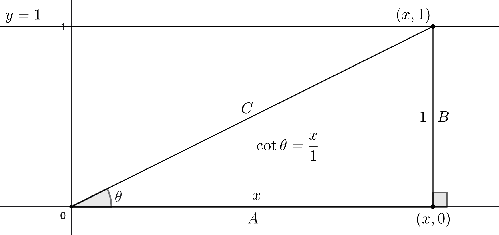
Each such \(x\) corresponds to a unique point on that line and thus determines a unique standard position angle, \(\t\), when connected to the origin by a segment, \(C\). Thus it also determines a unique triangle consisting of side \(C\) and sides \(A\) (connecting \((0,0)\) to \((x,0)\)) and \(B\) (connecting \((x,0)\) to \((x,1)\)). Furthermore, \(\Delta ABC\) is a right triangle (because side \(B\) is parallel to the \(y\)‑axis—proof?—which is perpendicular to the \(x\)‑axis by convention) which implies that \(\cot\t = \Frac x1 = x\). In other words, for each such \(x\), there exists some real number \(\t\) such that \(\cot\t = x\).
Case \(x \lt 0\): The argument is essentially identical, except that each \(x \lt 0\) determines a unique standard position angle with a measure greater than \(\pi/2\) so we must construct the right triangle on the other side of the \(y\)‑axis and use the signed length of \(B\)—which is still the \(x\)‑coordinate of the point, i.e., the given value of \(x\)—in the right triangle ratio definition of \(\cot.~~\blksq\)
5.98) Show that the period of \(f(\t) = \cot \t\) is \(\pi\).
Pf: We must show that \(\pi\) is the smallest positive real number such that \(\cot(\t + \pi) = \cot \t\) for all \(\t\) for which cot is well‑defined. The proof consists of two parts: we show that \(\cot\) has period \(\pi\); and we show that \(\pi\) is the smallest positive number for which this is true.
Part 1: For all \(\t\) such that \(\sin(\t + \pi) \ne 0\), \(\cot(\t + \pi) = \displaystyle \frac{\cos(\t + \pi)}{\sin(\t + \pi)} = \frac{-\cos \t}{-\sin \t} = \frac{\cos \t}{\sin \t} = \cot \t\) (because if \(\sin(\t + \pi) \ne 0\), then \(\sin \t \ne 0\); proof?); this shows that \(\pi\) is a period of cot.
Part 2: We use the method suggested in the text as a hint for Problem 93: Suppose there exists \(p\) between 0 and \(\pi\), exclusive, i.e., \(0 \lt p \lt \pi,\) such that \(\cot(\t + p) = \cot \t\) for all \(\t\) for which it is well‑defined; then \(\cot p = \cot(0 + p) = \cot 0 = 0\), i.e., our assumption implies \(\cot p = 0\), and there is only one value between 0 and \(\pi\) for which this is true, namely \(\frac{\pi}2.~\) But, for example, \(\cot \frac{\pi}4 = 1\), whereas \(\cot(\frac{\pi}4 + \frac{\pi}2) = \cot \frac{3\pi}4 = -1\); in other words, we’ve found a value of \(\t\) such that \(\cot(\t + \frac{\pi}2) \ne \cot \t\), so \(p=\pi\) must be the smallest (positive) value for which \(\cot(\t+p) = \cot(\t)\) is always true.\(~~\blksq\)


Relationship between their (fundamental) graphs: starting with the cofunction identity \(\sin x = \cos\left(\displaystyle\frac{\pi}2-x\right)\), factoring \(-1\) from the argument of the cos function and using the fact that cos is an even function \(\displaystyle \implies \sin x = \cos\left[-1\left(x-\frac{\pi}2\right)\right] = \cos\left(x-\frac{\pi}2\right)\), so the (fundamental) graph of sin is the same as cos, horizontally shifted \(\displaystyle\frac{\pi}2\) units to the right, or, equivalently, the (fundamental) graph of cos is the same as sin, horizontally shifted \(\displaystyle\frac{\pi}2\) units to the left.
Amplitude and period: given \(y = f(x) = A\sin(\w x)\text{ or } = A\cos(\w x), \w \gt 0\) (if \(\w \lt 0\) begin the analysis by changing \(A\sin(\w x)\) to \(-A\sin(|\w| x)\), \(A\cos(\w x)\) to \(A\cos(|\w| x)\)): the amplitude of \(f\) is \(|A|\), which gives the maximum and minimum values (maxima and minima) attained by \(f\) and the factor (i.e., multiplier) by which the (fundamental) graph is vertically "stretched" (\(|A| \gt 1\)) or "compressed" (\(|A| \lt 1\)); and the (fundamental) period (see Section 5 above for the definition) of \(f\) is \(T = \displaystyle \frac{2\pi}{\w}\), which gives the distance between consecutive maxima (and minima), and twice the distance between consecutive zeros and between any maximum and the next minimum and vice‑versa (i.e., the distance between consecutive zeros, and between a maximum (resp. minimum) and the next minimum (resp. maximum) is half the period, \(\displaystyle \frac T2\)). Conversely: given the amplitude, \(A\), the period, \(T\), and whether the function has a zero, or a maximum or minimum, at zero (or information from which these properties can be deduced, e.g., the maximum or minimum value, the minimum distance between these, and the value at zero), one can immediately write down \(\displaystyle f(x) = A\sin\left(\frac{2\pi}T x\right)\) (if \(f(0) = 0\)) or \(\displaystyle f(x) = \pm A\cos\left(\frac{2\pi}T x\right)\) (if \(f(0) = \pm A\)).
Solved Problems
12, 16, and 20) Determine the amplitude and period of each function without graphing.
6.12) \(y = \cos 3x\)
Sln: \(\cos 3x = A\cos\w x\) with \(A = 1, \w = 3\) so the amplitude is \(\box{1}\) and the period \(T = \box{\frac{2\pi}{3}}.\) (A check for the period calculation is to compute \(T/4\) and confirm that when you put it in for \(x\), the argument for the \(\cos\) function becomes \(\pi/2\); we leave this for the reader.)
6.16) \(y = -3\cos 3x\)
Sln: \(y = A\cos\w x\) with \(A = -3, \w = 3\) so the amplitude is \(|A| = \box{3}\) and the period is again \(\box{\frac{2\pi}3}\).
6.20) \(y = \Frac95 \cos \left(-\Frac{3\pi}2 x\right)\)
Sln: Because \(\cos\) is an even function, \(\Frac95 \cos \left(-\Frac{3\pi}2 x\right) = \Frac95 \cos \left(\Frac{3\pi}2 x\right) \implies A = \box{\frac95}, T = \Frac{2\cancel{\pi}}{3\cancel{\pi}/2} = \box{\frac43}\). Check: \(T/4 = 1/3 \implies (3\pi/2)(1/3) = \pi/2.~~\chec\)
24 and 30) Match the given function to one of the graphs (A)–(J).
6.24) \(y = 3\cos 2x\)
Sln: \(A = 3, T = 2\pi/2 = \pi\) and since it’s the \(\cos\) function, \(y(0) = 3\): the graph which matches these criteria is \(\box{\text{I}}\):
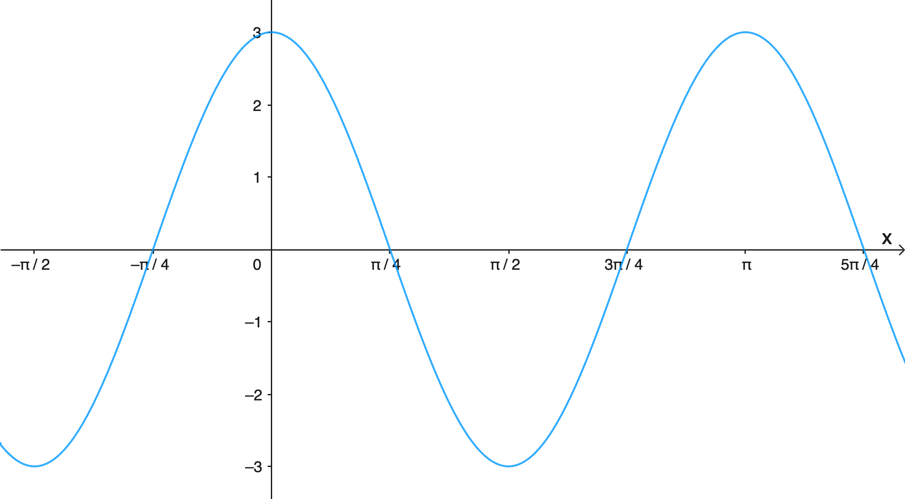
6.30) \(y = -2\sin\left(\Frac12 x\right)\)
Sln: \(|A| = |-2| = 2, T = (2\pi)/(1/2) = 4\pi\), which narrows it down to graph A, B, C, or D. Since it’s \(\sin\), \(y(0) = 0\) which eliminates A and C; since \(A \lt 0\), \(y(T/4=\pi) \lt 0\), i.e., the graph "leaves \((0,0)\) going down," so the answer is \(\box{\text{D}}\):
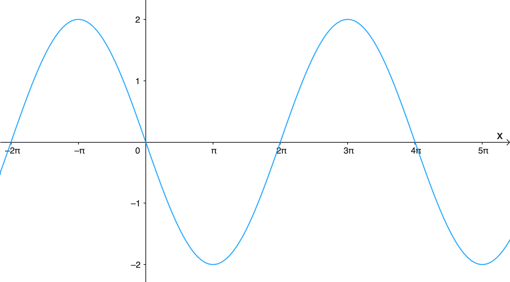
42, 50, and 58) Graph each function. Be sure to label key points and show at least two cycles. Use the graph to determine the domain and the range of each function.
6.42) \(y = \cos(-2x)\)
Sln: First: the domain of any pure sinusoid, \(A\sin(\w x + \phi) + B \text{ or } A\cos(\w x + \phi) + B, A, B, \w, \phi\) constants (\(\phi\) is a Greek letter I learned to pronounce "fee" but I believe some pronounce it "fī"), is \(\box{\mathbb{R}}\), so that should be "automatic," i.e., you don’t need the graph for that. Similarly, you don’t need the graph to determine the range: it is always the closed interval \([B -|A|, B + |A|]\) (because the range of \(\sin\) and \(\cos\) is \([-1,1]\) so the range of \(A\) times both of these is \([-|A|, |A|]\) and then adding \(B\) just shifts the entire interval by \(B\)); in this case \(A = 1\) and \(B= 0\) so the range is \([0 - 1, 0 + 1] = \box{[-1,1]}\). \(y = \cos(-2x) = \cos(2x) \implies T = 2\pi/2 = \pi\), so this will be the (horizontal) distance between consecutive maxima and consecutive minima; \(\pi/2\) will be the distance between consecutive zeros; and \(\pi/4\) will be the distance between any zero and the neighboring maximum and minimum. \(\cos(-2(0)) = \cos(0) = 1\), so \((0,1)\) is on the graph and it is a maximum (why, exactly?), so there will be zeros \(\pi/4\) units to the left and to the right, i.e., \((-\pi/4, 0)\) and \((\pi/4, 0)\) are on the graph; minima of \(y=-1\) occur at \(x=\pm\pi/2\), \(y=0\) (again) at \(x=\pm3\pi/4\), and \(y=1\) (again) at \(x=\pm\pi\). The graph below illustrates what, in my opinion, constitutes "minimum sufficient labeling" of a sinusoidal graph (note, for example, that I prefer to provide three periods, one to the left of zero and two to the right).
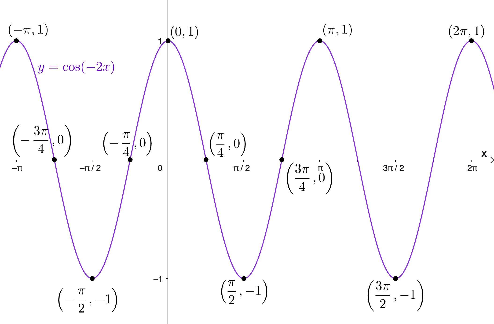
6.50) \(y = 4\sin\left(\Frac{\pi}2 x\right) - 2\)
Sln: The domain is \(\box{\mathbb{R}}, |A| = 4, B = -2\) so the range is \([-2-4, -2+4] = \box{[-6,2]}\); \(y(0) = 0 - 2 = -2, T = \Frac{2\pi}{\pi/2} = 4\) so \(y(T/4 = 1) = 4 - 2 = 2, y(T/2 = 2) = - 2, y(3T/4 = 3) = -4 - 2 = -6, y(T) = -2,\) etc. Here is a sufficiently labeled graph:
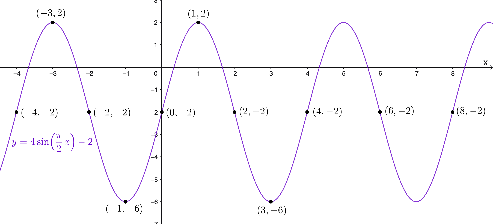
6.58) \(y = -\Frac12 \sin\left(\Frac{\pi}8 x\right) + \Frac32\)
Sln: The domain is \(\box{\mathbb{R}}, |A| = \Frac12, B = \Frac32\) so the range is \(\left[\Frac32-\Frac12,\Frac32+\Frac12\right] = \box{[1,2]}\), \(T = \Frac{2\pi}{\pi/8} = 16\) so the quarter period points are four units apart; \(y(0) = \Frac32\) and \(A \lt 0\) means that the graph first descends from this value as \(x\) increases, so \(y(4) = 1, y(8) = \Frac32, y(12) = 2, y(16) = \Frac32,\) etc. Here’s what you should get:
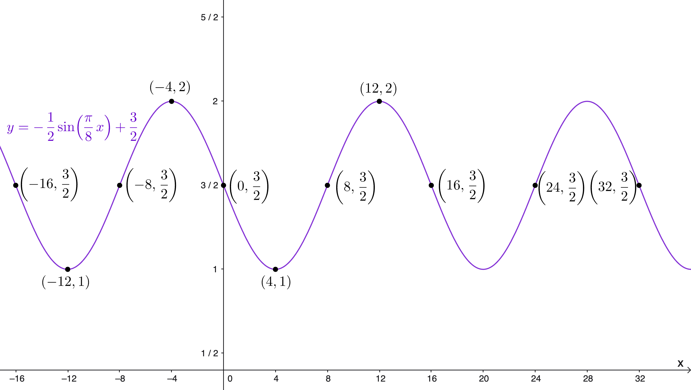
6.62) Write the equation of a sine function that has amplitude 4 and period 1.
Sln: Most simply, we need to write a function of the form \(y(x) = A\sin(\w x)\), where \(|A|\) is the amplitude and \(T = 2\pi/\w\) is the period; therefore the most straightforward solution is derived from using the amplitude as given (\(|4| = 4\)) and setting \(T = 1 = 2\pi/\w\) yielding \(\w = 2\pi\) to obtain:
\[\box{y(x) = 4\sin(2\pi x)}\]
But (infinitely) many other functions satisfy the requirements.
66, 72, and 76) Find an equation for each graph.
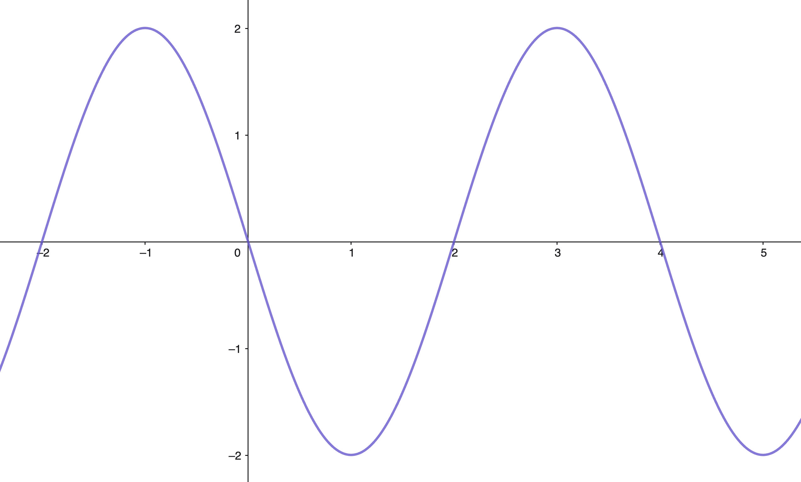
Sln: For these, until Chapter 8, the answers will look like \(y(x) = A\sin(\w x) + B\) or \(y(x) = A\cos(\w x) + B\), depending on whether \(y(0) = B (\implies \sin)\) or \(y(0) = B \pm A (\implies \cos)\), where \(|A| = (\text{maximum} - \text{minimum})/2\) and \(B = (\text{maximum} + \text{minimum})/2\) (in Chapter 8 we learn how to deal with sinusoids of the form \(A\sin(\w x + \phi) + B\)). In this case, the maximum is \(2\) and the minimum is \(-2\) so \(|A| = (2 - (-2))/2 = 2\) and \(B = (2 + (-2))/2 = 0 = y(0)\) (according to the graph) so we know our answer will look like \(y(x) = \pm2\sin(\w x)\). To calculate \(\w\) we need the period \(T\) to use \(T = 2\pi/\w \implies \w = 2\pi/T\); now, \(T = (x\)‑coordinate of any maximum \(- x\)‑coordinate of the maximum immediately to its left\()\), which in this case yields \(T = (3 - (-1)) = 4 \implies \w = 2\pi/4 = \pi/2\). So now we know the answer looks like \(y(x) = \pm2\sin(\pi x/2)\), all we need to do is figure out the sign; the easiest way to do this is to evaluate the function at \(T/4\) and see which sign is required to make the value agree with the graph: \(\pm2\sin(\pi(1)/2) = \pm2(1)\) and since the point actually on the graph is \((1,-2)\), we conclude that we need the negative sign:
\[\box{y(x) = -2\sin\left(\frac{\pi x}2\right)}\]
The check is to evaluate our answer at other key values of \(x\) and confirm that those points are on the graph; example: \(-2\sin(\pi(3)/2) = -2(-1) = 2.~\chec\)
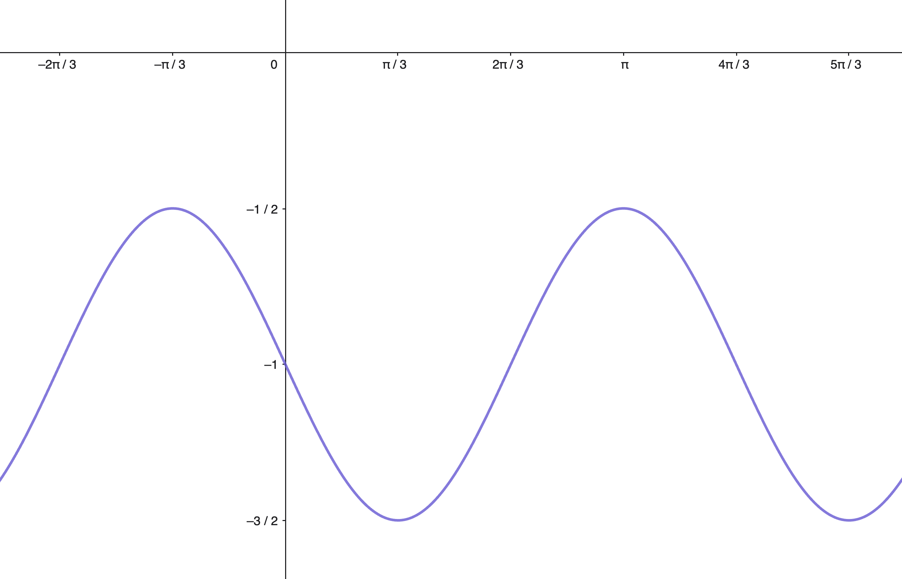
Sln: The maximum and minimum are, respectively, \(-\Frac12, -\Frac32 \implies |A| = \Frac12\left[-\Frac12 - \left(-\Frac32\right)\right] = \Frac12\), \(B = \Frac12\left[-\Frac12 + \left(-\Frac32\right)\right] = -1 = y(0)\) so we know the answer will look like \(\pm\Frac12\sin(\w x) - 1\). Next, \(T = \pi - \left(-\Frac{\pi}3\right) = \Frac{4\pi}3 \implies \w = \Frac{2\pi}{4\pi/3} = \Frac32 \implies y(x) = \pm\Frac12\sin\left(\Frac{3x}2\right) - 1\). Finally, \(y(T/4 = \pi/3) = -\Frac32 = -\Frac12 - 1 = -\Frac12\sin\left(\Frac{3\pi/3}2\right) - 1\) so the required equation is:
\[\box{y(x) = -\frac12\sin\left(\frac{3x}2\right) - 1}\]
Check: \(y(3T/4 = \pi) = -1/2\sin(3\pi/2) - 1 = 1/2 - 1 = -1/2.~\chec\)
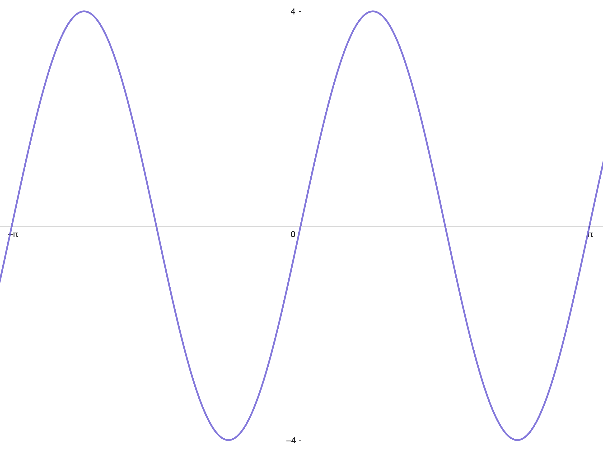
Sln: The maximum is \(4\), the minimum is \(-4\) so \(|A|= 0.5(4-(-4)) = 4, B = 0.5(4+(-4)) = 0 = y(0)\) so \(y(x) = \pm4\sin(\w x)\); \(T = \Frac{\pi}4 - \left(-\Frac{3\pi}4\right) = \pi \implies \w = \Frac{2\pi}{\pi} = 2 \implies y(x) = \pm4\sin(2x)\); \(y(\pi/4) = 4 \implies\)
\[\box{y(x) = 4\sin 2x}\]
Check: \(y(3\pi/4) = 4\sin(2(3\pi/4)) = -4.~\chec\)
6.80) Find the average rate of change of \(f(x) = \cos 2x\) over the interval \(0 \le x \le \Frac{\pi}2\).
Sln: By definition, the average rate of change of a function \(f(x)\) over the interval \(I: a \le x \le b\) (or \(I = [a,b]\)) is:
\[\Delta_I f \equiv \frac{f(b) - f(a)}{b - a}\]
where \(\Delta\) is the capital Greek letter "delta" and the left hand side is read "delta sub I of f." So for \(f(x) = \cos 2x, I = [0, \pi/2]\), \(\Delta_I f = \Frac{\cos(2(\pi/2)) - \cos(2(0))}{\pi/2 - 0} = \Frac{-1 - 1}{\pi/2} = \box{-\frac4{\pi}}.\)
6.84) Given \(f(x) = -3x, g(x) = \sin x\), find and graph \((f \circ g)(x)\) and \((g \circ f)(x)\).
Sln: \((f \circ g)(x) = f(g(x)) = -3g(x) = \box{-3\sin x}\), \((g \circ f)(x) = g(f(x)) = \sin(-3x) = \box{-\sin(3x)}\); here are both graphed on the same set of axes:
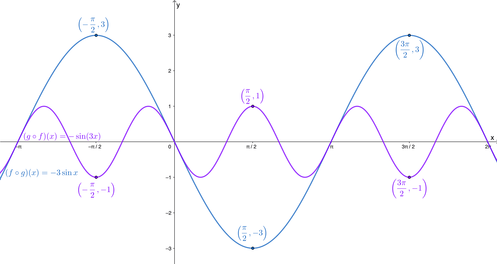
6.86) Graph \(g(x) = \begin{cases} 2\sin x, & 0 \le x \le \pi \\ \cos x + 1, & \pi \lt x \le 2\pi \end{cases}\)
Sln: This exercise is, perhaps, more difficult to execute on a graphing utility (GU) than "by hand": for the latter, all one has to do is sketch that portion of \(y = 2\sin x\) between \(x = 0\) and \(x = \pi\) and that portion of \(y = \cos x + 1\) between \(x = \pi\) and \(x = 2\pi\), which by this point shouldn’t be that challenging; but GUs tend not to be designed to make graphing piecewise‑defined functions as straightforward as graphing "regular" functions; and yet nowadays, using a GU to graph any function it is capable of graphing is an essential mathematical skill.
We cannot provide details of the syntax required on all available GUs (we are not even sure we know of all available GUs); what we can do is include in our GeoGebra graph of the function the syntax required to produce that graph in GeoGebra:
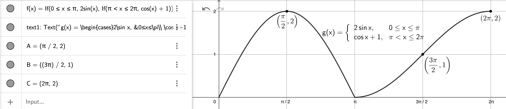
6.90)
The voltage \(V\), in volts, produced by an ac generator at time \(t\), in seconds, is
\[V(t) = 120\sin(120\pi t)\]
a) What are the amplitude and period?
b) Graph \(V\) over two periods, beginning at \(t=0\).
c) If a resistance of \(R=20\) ohms is present, what is the current \(I\)? (Hint: Ohm’s Law is \(V = IR\).)
d) What is the amplitude and period of the current \(I\)?
e) Graph \(I\) over two periods, beginning at \(t = 0\).
Sln: a) Amplitude \(= \box{120\text{ volts}}\), the period \(T = \Frac{2\pi}{120\pi} = \box{\frac1{60}\text{ sec}^{-1}}\).
b)
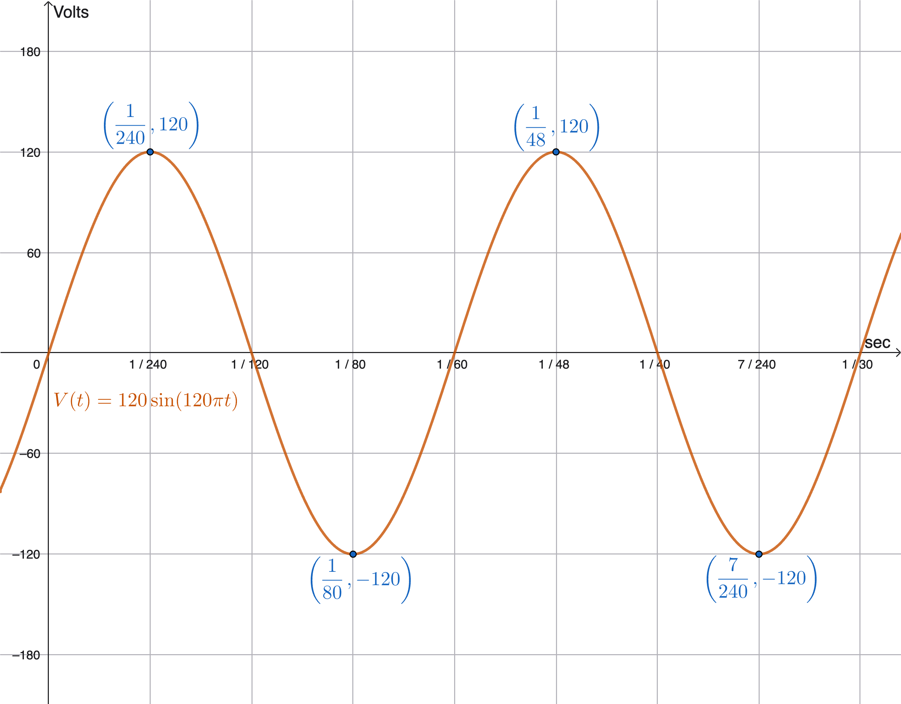
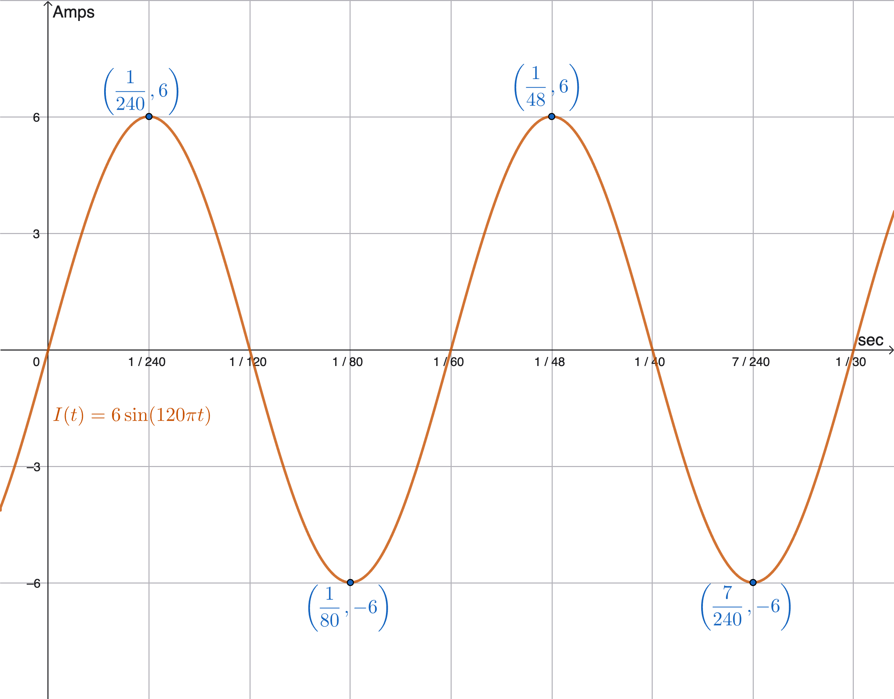
6.92)
A one‑lane highway runs through a tunnel in the shape of one‑half a sine curve cycle. The opening is 28 feet wide at road level and is 15 feet tall at its highest point.
a) Find an equation for the sine curve that fits the opening.
Place the origin at the left end of the sine curve.
b) If the road is 14 feet wide with 7‑foot shoulders on each
side, what is the height of the tunnel at the edge of the road?
Sln: a) 28 feet \(= T/2 \implies T = 56 = 2\pi/\w \implies \w = 2\pi/56 = \Frac{\pi}{28}\); 15 feet at its highest point \(\implies A = 15\), and the origin at the left end of the sine curve \(\implies (0,0)\) is on the curve \(\implies\) the required equation is:
\[\box{y(x) = 15\sin\left(\frac{\pi}{28}x\right)}\]
b) \(y(x)\) gives the height of the tunnel \(x\) feet away from the left end of the tunnel, so we simply need to evaluate \(y(7) = 15\sin(\pi(7)/28) = 15\sin(\pi/4) = \box{\frac{15\sqrt2}2 \doteq 10.6\text{ feet}}\). (A half‑cycle of a sine curve centered on a maximum or minimum is symmetric about the horizontal position of that extremum, so the height of the tunnel at the right edge of the road is the same as at the left edge, which the reader can confirm by evaluating \(y(21=7+14)\).)
6.99) Find four of the points of intersection of \(y = \tan x\) and \(y = 1\).
Sln: In other words, find four ordered pairs \((x,y)\) such that each pair makes both equations simultaneously true. Clearly, this requires that \(y=1\) in each ordered pair, so we must find four values of \(x\) such that \(\tan x = 1\). We could (really should) appeal to the unit circle to figure this out, but this section is about the graphs of \(\sin\) and \(\cos\), so let’s see if we can figure it out using those graphs.
Now, \(\tan x = \Frac{\sin x}{\cos x} = 1 \implies \sin x = \cos x\) so the way to figure this out using the graphs of \(\sin\) and \(\cos\) is to plot them together and figure out where their graphs intersect: the \(x\)‑coordinates of those intersections are the required values of \(x\). The way to do this using GeoGebra is to define two functions, f(x) = sin(x) and g(x) = cos(x) (GeoGebra automatically plots them for you) and then use the Intersect(f, g, <lower bound>, <upper bound>) command, where <lower bound> is an \(x\) value a little less than the \(x\)‑coordinate of a point of intersection, and <upper bound> is an \(x\) value a little greater (you determine these from inspection of the graph); you do this for each intersection point you want to find, and GeoGebra finds them for you...except, it finds numerical approximations, not exact values. In real life, this is sufficient, because a real life problem like this, if you get one, almost certainly won’t have "nice looking" exact answers; but this one does, and I’ve tried to indicate what they are by instructing GeoGebra to put and label the horizontal ticks at multiples of \(\pi/4\). Thus careful inspection of the graph below
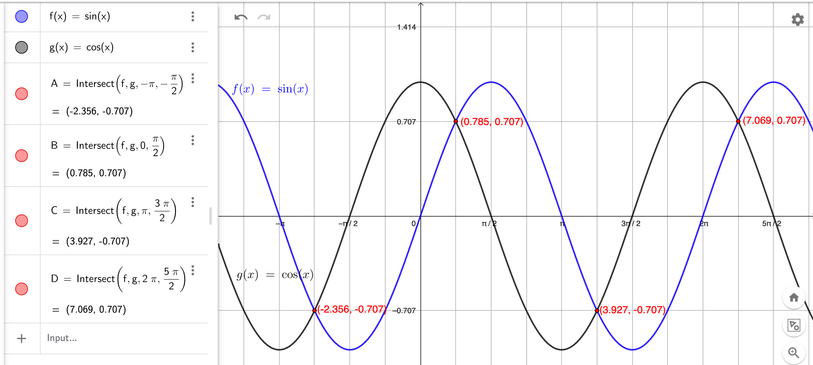


Solved Problems
7.8) What is the \(y\)‑intercept of \(\cot x\)?
Sln: The \(y\)‑intercept of the graph of any function \(f(x)\) is \(f(0)\) so the \(y\)‑intercept of \(\cot x\) is \(\cot 0 = \Frac{\cos 0}{\sin 0} = \Frac10\)...which is undefined, so \(\cot x\) has \(\box{\text{no y-intercept}}.\)
7.14) For what numbers \(x\), \(-2\pi \le x \le 2\pi\), does the graph of \(y = \csc x\) have vertical asymptotes?
Sln: The graph of \(y = \csc x\) has vertical asymptotes for \(x\) which make \(\csc x = \Frac1{\sin x}\) undefined, which are values of \(x\) that make \(\sin x = 0\); in the closed interval \(-2\pi \le x \le 2\pi\), these are \(\box{-2\pi, -\pi, 0, \pi, 2\pi}\)
22, 28, 34, and 40: Graph the given function, showing at least two cycles, labeling important points (and asymptotes), and state the function’s domain and range.
7.22) \(y = \tan\left(\Frac12 x\right)\)
Sln: This is the fundamental graph of \(y = \tan x\) "stretched" horizontally by a factor of \(\Frac1{1/2} = 2\), so the \(y\)‑intercept is still the origin, but the first asymptotes are at \(x = \pm\pi\) and the points \(\left(\pm\Frac{\pi}2, \pm1\right)\) are on the graph instead of \(\left(\pm\Frac{\pi}4, \pm1\right)\), etc.:
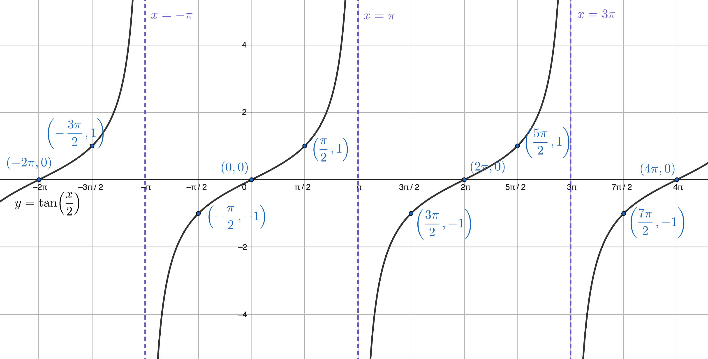
7.28) \(y = -4\sec x\)
Sln: This is the fundamental graph of \(y = \sec\), reflected through the \(x\)‑axis and stretched vertically by a factor of 4; so, for example, the point \((0,1)\) is mapped to \((0,-4)\), the points \((\pm\pi, -1) are mapped to \)(\pm\pi, 4)\(, the vertical asymptotes at odd multiples of \)\Frac{\pi}2$ remain where they are, etc.:
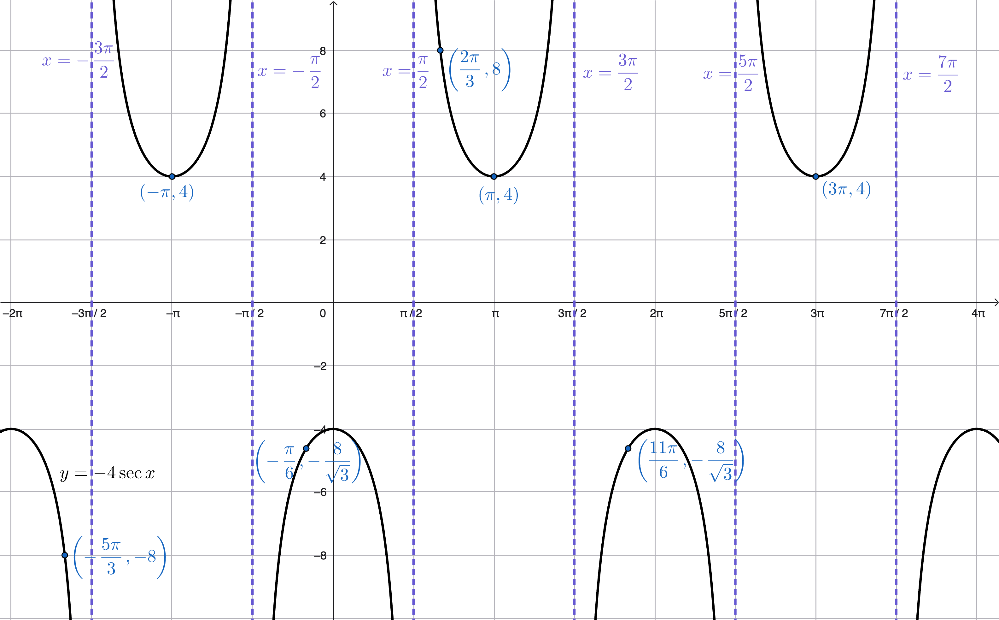
7.34) \(y = 2\cot x - 1\)
Sln: This is the fundamental graph of \(y = \cot x\), first vertically stretched by a factor of 2, and then shifted down by 1; so the asymptotes aren’t moved at all, i.e., remain at \(x = k\pi,~k\) any integer, \(\left(\Frac{\pi}4, 1\right)\) remains where it is \((2(1)-1 = 1)\) but \(\left(-\Frac{\pi}4, -1\right)\) gets mapped to \(\left(-\Frac{\pi}4, -3\right)\), \(\left(\Frac{\pi}2, 0\right)\) gets mapped to \(\left(\Frac{\pi}2, -1\right)\), etc.:
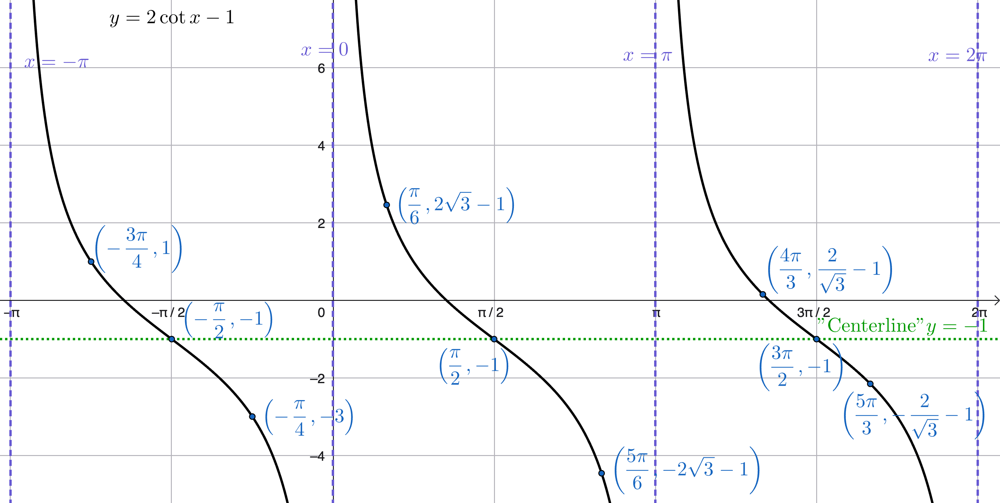
7.40) \(y = 3\sec\left(\Frac14 x\right) + 1\)
Sln: This is the fundamental graph of \(y = \sec x\), stretched horizontally by a factor of \(\Frac1{1/4} = 4\), then stretched vertically by a factor of 3, then shifted "up" by \(+1\); so the vertical asymptotes are at \(x = 4\left(\pm\Frac{\pi}2\right) = \pm2\pi, 4\left(\pm\Frac{3\pi}2\right)\pm6\pi, 4\left(\pm\Frac{5\pi}2\right)\pm10\pi,\) etc.; the points \((2k\pi, 1), k\) an integer, get mapped to \((8k\pi, 4)\), the points \(((2k+1)\pi, -1)\) get mapped to \(((8k+4)\pi, -2)\), etc.:
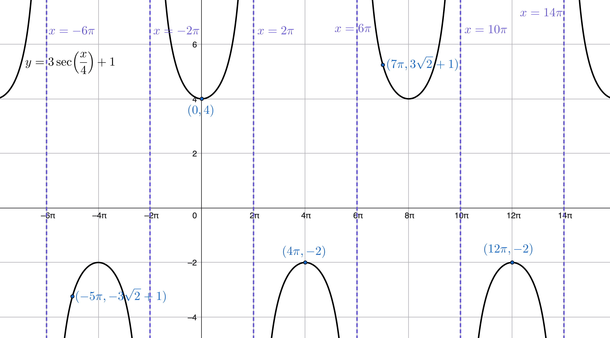
7.44) Find the average rate of change of \(f(x) = \sec(2x)\) from \(0\) to \(\Frac{\pi}6\).
Sln: \(\Delta_{[0,\pi/6]}(\sec(2x)) = \Frac{\sec(2(\pi/6)) - \sec(2(0))}{\Frac{\pi}6 - 0} = \Frac{1/\cos(\pi/3) - 1/\cos(0)}{(\pi/6)} = \Frac{6(2-1)}{\pi} = \box{\frac6{\pi}}.\)
7.48) Given: \(f(x) = \Frac12 x,~g(x) = 2\csc x\), find and graph \((f \circ g)(x)\) and \((g \circ f)(x)\).
Sln: \((f \circ g)(x) = f(g(x)) = \Frac12(2\csc x) = \box{\csc x}\), whose graph is given above in the Formulas Section.
\((g \circ f)(x) = g(f(x)) = \box{2\csc\left(\Frac x2\right)}\), whose graph, given below, is the fundamental graph of \(\csc\), horizontally stretched by a factor of 2, then vertically stretched by a factor of 2:
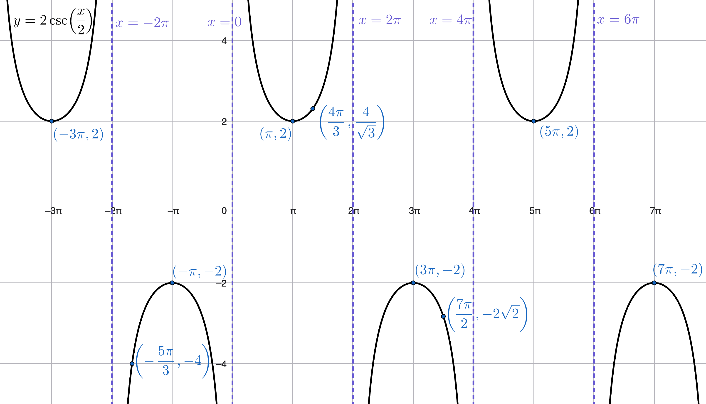
7.50) Graph \(g(x) = \begin{cases} \csc x, & 0 \lt x \lt \pi \\ 0, & x = \pi \\ \cot x, & \pi \lt x \lt 2\pi \end{cases} \)
Sln: The figure below includes both the required graph and the GeoGebra commands required to produce it:
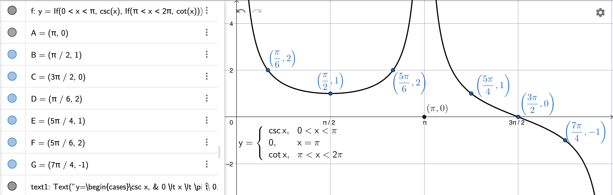
7.51) Two hallways, one 3 feet wide, the other 4 feet wide, meet at a right angle as diagramed below:
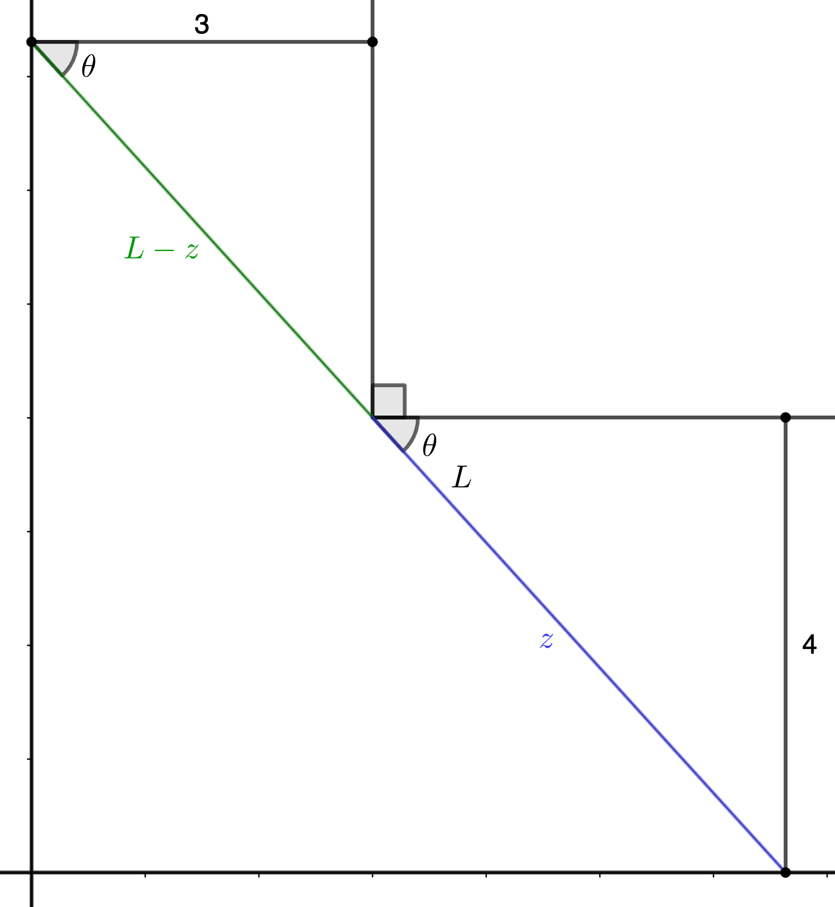
Sln: Referring to the diagram: let \(z\) be the portion of \(L\) spanning the 4 foot hallway; then \(L-z\) equals the portion of \(L\) spanning the 3 foot hallway; also, since the segment defining the width of the 3 foot hallway is parallel to the walls of the 4 foot hallway, by a theorem of geometry, the measure of the angle between said segment and \(L\) is also \(\theta\). By right triangle trigonometry, \(\csc\theta = \Frac z4 \implies\) \(z = 4\csc\theta\), and \(\sec\theta = \Frac{L-z}3 \implies L-z = 3\sec\theta\); together these imply \(L-4\csc\theta = 3\sec\theta \implies L(\theta) = 3\sec\theta + 4\csc\theta.~~\blksq\)
b, c) Graph \(L(\theta)\) and determine the value of \(\theta\) that gives the minimum value of \(L = L_{\min}\).
Sln: The required graph and the GeoGebra‑approximated location of the minimal point on it, as well as the GeoGebra commands required to produce them, are provided below:
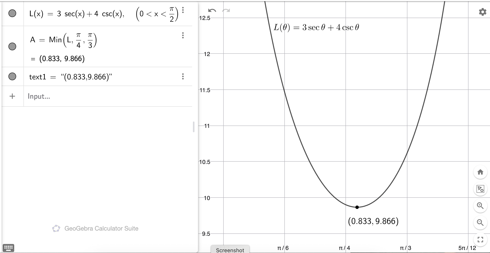
d) Explain why the longest (unbendable) ladder that can be carried around the corner has length \(L_{\min}\).
Sln: To understand why \(L_{\min}\) is the longest (unbendable) ladder that can be carried around the corner, we must first clarify precisely what \(L(\theta)\) models: it does not model the length of any ladder we might try to get around the corner, it models the length of any ladder long enough to touch the three points shown in the diagram: we can certainly get a ladder shorter than \(L_{\min}\) around the corner, but such a ladder can’t touch all three points, because we just calculated the length of the shortest such ladder. Now consider trying to carry a longer ladder around the corner and getting "stuck" in the position illustrated: the only way to make progress would be to shorten the ladder. Thus \(L_{\min}\) is the length of the longest ladder that both touches all three points and yet can still make it around the corner.
In trig\((\w x \mathbf{-} \phi), \w \gt 0\): \(\Frac{\phi}{\w} = \) the phase shift = the horizontal shift of the fundamental graph, to the right if \(\phi \gt 0\), to the left if \(\phi \lt 0\)...but I prefer to "figure things out" by setting \(\w x - \phi = 0\) and (for \(\sin, \cos, \sec,\) and \(\csc\)) \(\w x - \phi = 2\pi\) or (for \(\tan\) and \(\cot\)) \(\w x - \phi = \pi\) and solving for \(x\) to find "period demarcation points," and then figure out where everything else belongs by knowing what the fundamental graphs do at \(T/4, T/2,\) and \(3T/4\).
For the kind of sinusoidal curve fitting taught in this Section, one is trying to obtain a function of the form:
\[y(x) = A\sin(\w x + \phi) + B\text{ or } = A\cos(\w x + \phi) +B\]
so one needs to deduce, from given information, the amplitude \(A\), the central or average value \(B\), the angular frequency \(\w = 2\pi/T\), and the phase shift \(\phi;\) one learns to do this by imitating examples and by doing it, repeatedly.
Solved Problems
6, 10, and 14: Find the amplitude, period, phase shift (and central value) of, and graph the given function, showing at least two cycles, and labeling important points.
8.6) \(y = 3\cos(2x+\pi)\)
Sln: \(y = 3\cos(2x+\pi) = A\cos(\w x - \phi) + B\) with \(A=3, \w=2, \phi=-\pi, B=0\) so the amplitude is \(\box{3}\), the central value is \(\box{0}\), the period is \(\Frac{2\pi}2 = \box{\pi}\) and the phase shift is \(\box{-\frac{\pi}2}\). Thus the graph will oscillate around the central value of \(y=0\); attaining a maximum of \(y=3\) at \(2x+\pi = 0 \implies x = -\Frac{\pi}2\), then again at \(x=-\Frac{\pi}2 + \pi = \Frac{\pi}2\), and again at \(x=\Frac{3\pi}2\), etc.; a minimum of \(y=-3\) at \(x=-\Frac{\pi}2+\Frac{\pi}2 = 0, + \pi = \pi, + \pi = 2\pi\), etc.; and the central value at \(x=-\Frac{\pi}2 + \Frac{\pi}4 = -\Frac{\pi}4, + \Frac{\pi}2 = \Frac{\pi}4, + \Frac{\pi}2 = \Frac{3\pi}4\), etc. (A sinusoid attains its central value every half‑period, i.e., twice as frequently as it attains its maxima and minima.) Here’s an amply labeled graph:
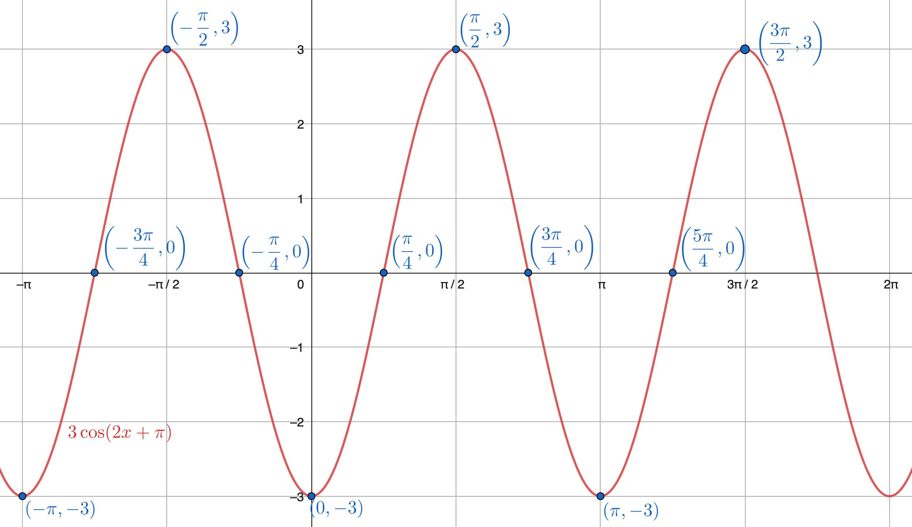
8.10) \(y = 2\cos(2\pi x + 4) + 4\)
Sln: \(y = 2\cos(2\pi x + 4) + 4 = A\cos(\w x - \phi) + B\) with \(A = 2, \w = 2\pi, \phi = -4, B = 4\) so the amplitude, central value, period, and phase shift are, respectively: \(\box{2, 4, 1, -\frac2{\pi}}\). Thus the maximum of \(y = 4+2 = 6\) occurs at \(x = -\Frac2{\pi}, -\Frac2{\pi} \pm 1, -\Frac2{\pi} \pm 2\), etc.; the minimum of \(y = 4 - 2 = 2\) occurs at \(x = -\Frac2{\pi} \pm \Frac12, -\Frac2{\pi} \pm \Frac32, -\Frac2{\pi} \pm \Frac52\), etc.; and the central value of \(y=4\) is attained at \(-\Frac2{\pi} \pm \Frac14, -\Frac2{\pi} \pm \Frac34, -\Frac2{\pi} \pm \Frac54\), etc. Here’s a graph showing three periods:
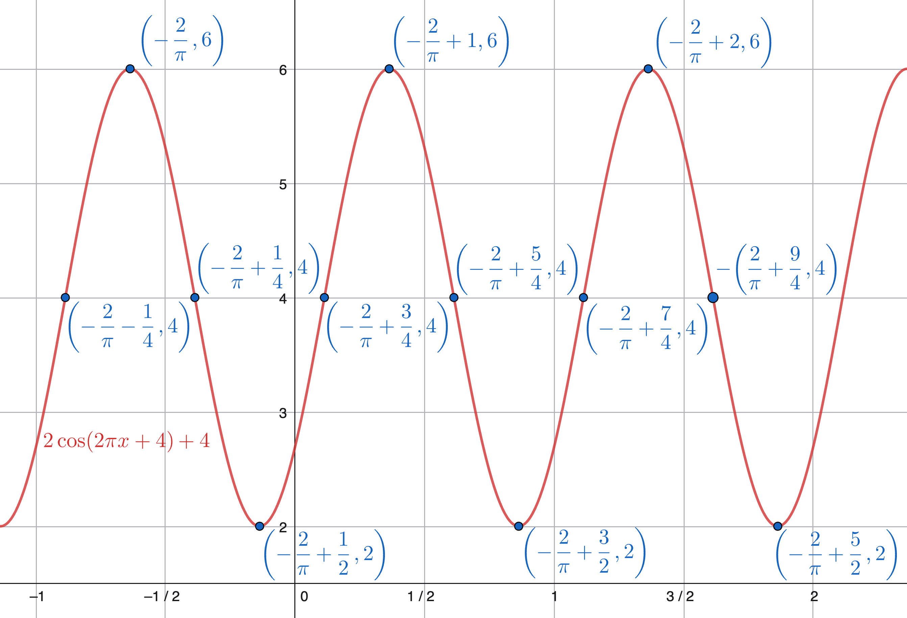
8.14) \(y = -3\cos\left(-2x+\Frac{\pi}2\right)\)
Sln: We need to match the given to \(A\cos(\w x - \phi) + B\) with \(\w \gt 0\), so we begin by writing \(y = -3\cos\left(-2x+\Frac{\pi}2\right) = -3\cos\left[-\left(2x-\Frac{\pi}2\right)\right] = -3\cos\left(2x-\Frac{\pi}2\right)\) because \(\cos(-x) = \cos(x)\) for all \(x\). Next, though not absolutely necessary, we utilize a result derived in our solution to Problem 112 from Section 4 of this Chapter, \(-\cos(x) = \cos(x+\pi)\), to write \(y = -3\cos\left(2x-\Frac{\pi}2\right) = 3\cos\left(2x+\Frac{\pi}2\right) = A\cos(\w x - \phi) + B \implies \box{A = 3, B = 0, T = \frac{2\pi}2 = \pi, \phi = \frac{-\pi/2}2 = -\frac{\pi}4}\). Thus, for \(k\) an integer, the maximum of \(y = 3\) occurs for \(x = -\Frac{\pi}4 + k\pi = \Frac{(4k-1)\pi}4\); the minimum of \(y = -3\) occurs at \(x = -\Frac{\pi}4 + \Frac{(2k+1)\pi}2 = \Frac{(4k+1)\pi}4\); and the zeros occur at \(x=-\Frac{\pi}4 + \Frac{(2k+1)\pi}4 = \Frac{k\pi}2\). Here’s the required graph:
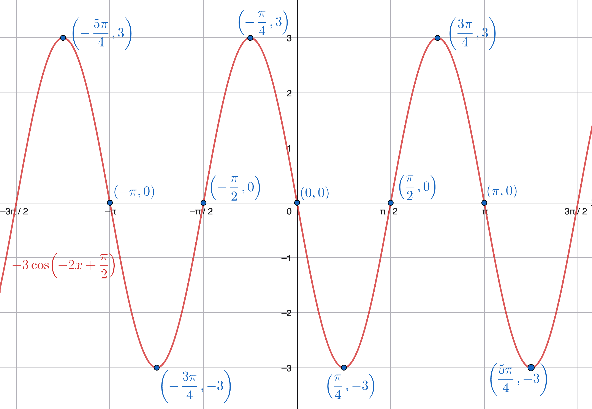
8.18) Write the equation of a sine function with amplitude 2, period \(\pi\), and phase shift \(-2\).
Sln: Amplitude \( = A = 2, \w = \Frac{2\pi}T = \Frac{2\pi}{\pi} = 2, \Frac{\phi}{\w} = -2 \implies \phi = (-2)(2) = -4\) so an equation that satisfies the requirements is:
\[\box{y = 2\sin(2x + 4)}\]
22 and 26: Graph the given function, showing at least two cycles and labeling important points (and asymptotes).
8.22) \(y = \Frac12\sec(3x - \pi)\)
Sln: The graph is the fundamental graph of \(\sec\), vertically scaled by a factor of \(\Frac12\) (or "compressed" by a factor of 2) and not vertically shifted, so the (local) minima will be \(y = \Frac12\) and the (local) maxima will be \(y = -\Frac12\). One of the minima will be where \(3x-\pi = 0 \implies x = \Frac{\pi}3\), so the graph is right‑shifted by \(\Frac{\pi}3\); and the next minimum to the right, one period away, will be where \(3x-\pi = 2\pi \implies x = \pi\) (because the period of \(\sec\) is \(2\pi\)), so the period is \(\pi - \Frac{\pi}3 = \Frac{2\pi}3\); this implies minima also at \(x = -\Frac{\pi}3, -\pi, \Frac{5\pi}3\), etc. The maxima occur midway between the minima, e.g., at \(x = -\Frac{2\pi}3, 0, \Frac{2\pi}3, \Frac{4\pi}3\), etc.; and the asymptotes occur midway between consecutive minima and maxima, e.g., at \(x = -\Frac{5\pi}6, -\Frac{\pi}2, -\Frac{\pi}6, \Frac{\pi}6, \Frac{\pi}2, \Frac{5\pi}6\), etc. Here’s the required graph:
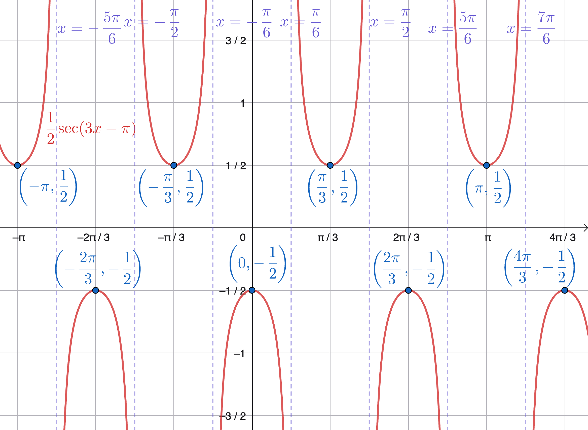
8.26) \(y = -\csc\left(-\Frac{\pi}2 x + \Frac{\pi}4\right)\)
Sln: \(\csc(-x) = -\csc(x)\) so \(y = -\csc\left(-\Frac{\pi}2 x + \Frac{\pi}4\right) = \csc\left(\Frac{\pi}2 x - \Frac{\pi}4\right)\) so the period is \(\Frac{2\pi}{\pi/2} = 4\) and the phase shift is \(\Frac{\pi/4}{\pi/2} = \Frac12\) (there is no vertical scaling or shift). Thus, for integer k, (local) minima of \(y=1\) occur at \(\Frac{\pi}2 x - \Frac{\pi}4 = \Frac{\pi}2 \implies x = \Frac32 + 4k = \Frac{8k+3}2\), e.g., \(-\Frac52, \Frac32, \Frac{11}2\), etc.; (local) maxima of \(y=-1\) occur at \(x = \Frac{8k-1}2\), e.g., \(-\Frac92, -\Frac12, \Frac72\), etc.; and asymptotes occur at \(x = \Frac{4k+1}2\), e.g., \(-\Frac72, -\Frac32, \Frac12, \Frac52\), etc. Here’s the required graph:
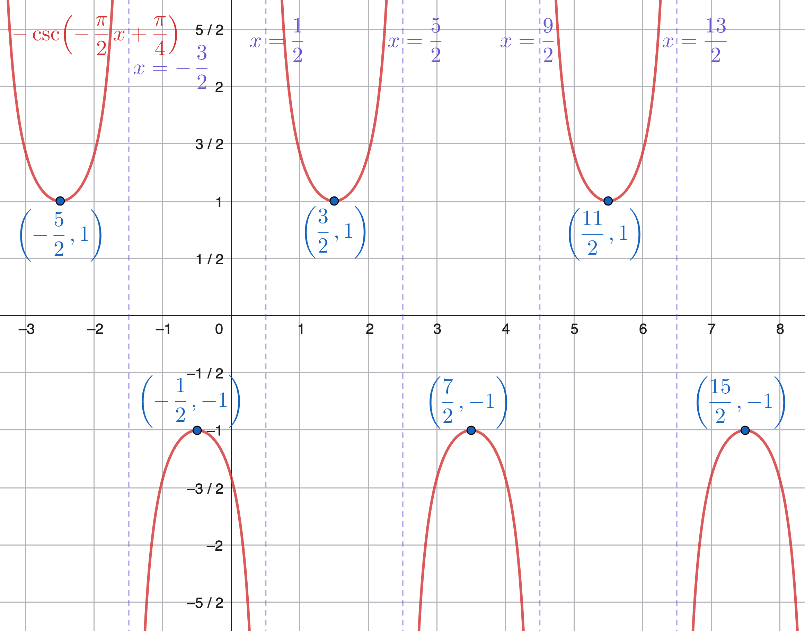
8.34)
Given the following data about the tide in Sitka Sound, Alaska, USA, on July 25, 2009:
\(~~~\)Length of time between consecutive high tides: 12 hours, 25 minutes;
\(~~~\)Time of occurrence of a high tide: 2:37 AM (2.6167 hours after midnight);
\(~~~\)Time of occurrence of the following low tide: 9:12 AM (9.2 hours after midnight; we assume the 9:12 PM printed in our copy of the text is a typo);
\(~~~\)High tide height above mean lower low water level: 11.09 feet;
\(~~~\)Low tide height: -2.49 feet;
answer the following questions:
a) Approximately when will the next high tide occur?
b) Find a sinusoidal function of the form \(y = A\sin(\w x - \phi) + B\) that models the data.
c) Use the function found in part b) to estimate the water height at 6 PM (18 hours).
Sln: a) We are told that high tides occur 12 hours, 25 minutes apart, so if a high tide was recorded at 2:37 AM, the next one should occur at 2 + 12 = 14 hours + 37 + 25 = 1 hour, 2 minutes = 15 hours, 2 minutes, i.e., at \(\box{\text{3:02 PM}}\); however,
b) The thing about sinusoids is that not only are they periodic, they’re also symmetric around their maxima, minima and zeros: not only are maxima and minima separated by integer multiples of the period, the maxima and minima occur one half‑period away from each other, and both of those occur one‑quarter period away from central values. On that basis, we would expect the low tide after the 2:37 AM high tide to occur at 2:37 + 6 hours, 12.5 minutes = 8:49.5 AM, not 9:12 AM: is the given information wrong? Yes and no: it is "oversimplified." Tides are only approximately periodic; in particular, the statement "the length of time between consecutive high tides is 12 hours and 25 minutes" is true as an average, but not precisely from one high tide to another (and the central value and amplitude of tides varies considerably, as any oyster farmer knows extremely well!) But neither is it exactly true that the period is 2(9:12 - 2:37) = 2(6:35) = 13 hours, 10 minutes, as the actual given tide times would imply. So what are we to do?
Well, the (real) purpose of this problem is not to teach us about the detailed physics of the tides, but to provide us with an exercise in formulating a sinusoid from "real world" numerical data. So: let’s figure out a model for each of the two different periods and graph them on the same set of axes to visualize just how different they are. (FWIW, this is my recommendation to students when I’m substituting for a teacher and an ambiguity in an assignment is discovered: I suggest that, time permitting, they solve the problem "both ways"—that way, one way or another, they’ve provided the desired answer, as well as showing that they can solve it given either interpretation of the problem.)
Either way, we only have one set of data to determine the amplitude and central value for the model, so we’ll calculate those first: \(A = [11.09 - (-2.49)]/2 = \box{6.79}\) feet and \(B = [11.09 + (-2.49)]/2 = \box{4.3}\) feet. Next we calculate the two different periods and phase shifts. For the 12 hour, 25 minute = 745 minute period (one period equals the interval between consecutive maxima, i.e., high tides), \(\box{\w = \frac{2\pi}{745}}\); because we’re asked to find a \(\sin\) function model (since we’re given the time of a maximum, it would be easier to calculate a \(\cos\) model, but alas, that’s not what we were asked for), the phase shift is found by finding \(\phi\) so that the argument of the \(\sin\) function in the model, \(\w t - \phi\), evaluated at the time of the known maximum, \(t=157\), equals the "first" argument at which \(\sin\) has a maximum, namely \(\Frac{\pi}2\)—in other words, we need to solve \(\Frac{2\pi}{745}(157) - \phi = \Frac{\pi}2 \implies \phi = \Frac{314\pi}{745}-\Frac{\pi}2 = \box{-\frac{117\pi}{1490}}\). Thus the model assuming a 745 minute period is: \[\box{H_{T=745}(t,\text{ in minutes}) = 6.79\sin\left(\frac{2\pi}{745}t + \frac{117\pi}{1490}\right) + 4.3\text{ feet}}\] Check: \(6.79\sin\left(\Frac{2\pi}{745}(157) + \Frac{117\pi}{1490}\right) + 4.3 = 6.79\sin\left(\Frac{(628+117)\pi}{1490}\right) + 4.3 = 6.79\sin(\pi/2)+4.3 = 11.09\text{ ft}~\chec\) \(6.79\sin\left(\Frac{2\pi}{745}(157 + 745) + \Frac{117\pi}{1490}\right) + 4.3 = 6.79\sin\left(\Frac{2\pi}{745}(157) + 2\pi + \Frac{117\pi}{1490}\right) + 4.3 = 11.09\text{ ft}~\chec\)
8.38) Given that the amount of daylight in Honolulu, HI, USA on the summer solstice of 2010 was \(13.43\) hours and the amount on the winter solstice of the same year was \(10.85\) hours:
a) Find a sinusoidal sine function that models the data.
b) Use the result of part a) to calculate the amount of daylight on April 1, the 91st day of the year.
c) Graph the function found in part a).
d) Look up the actual number of hours of daylight on April 1, 2010, in Honolulu, HI to compare to the result of part c).
Sln:
Graphs generated using GeoGebra.
| Venmo: @David-Goldsmith-13 |